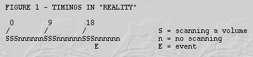
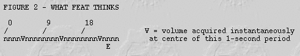

Contents
- Introduction
- User Guide
- FAQ
Contents
- How long does it take FEAT to analyse a data-set?
- Can I use FEAT to analyse fmri data from an animal study?
- Can I use FEAT to analyse PET data?
- How do I analyse a "sparse-sampling" dataset?
- What is FLAME and when do I use it?
- A file not found error occurs during my FEAT run - what do I do?
- Can I ignore time points or use a dummy EV to model missing values in FEAT?
- FEAT says my design is rank deficient - why?
- What contrast should I use to get ...?
- What's the right terminology for "sessions", "runs" etc?
- What does orthogonalisation of EVs mean, and when do I use it?
- When do you add temporal derivatives and what are they for?
- Are the results obtained using temporal derivatives biased?
- What are the red lines in the registration results?
- Can I use my own (study-specific) template image instead of the avg152?
- Are the mm coordinates reported by FEAT in MNI space or Talariach space?
- How can I insert a custom registration into a FEAT analysis?
- How do I run FEAT on single-slice data?
- How do I run higher-level FEAT when some inputs are first-level and some are higher-level?
- How are motion parameters and other confound EV files processed with respect to filtering?
- Can I use an old design.fsf - from a previous version of FSL?
How long does it take FEAT to analyse a data-set?
There are many factors that affect how long FEAT takes to analyse a data-set. These include the speed of the machine, the amount of RAM and swap space available, the number of time points, the amount of activation present and the number of voxels in the data. In addition, higher level analyses take longer since first level analyses are carried out in native EPI space whilst higher level analyses are carried out in standard space and use FLAME - a sophisticated Bayesian mixed-effects estimation technique. Hence it is very difficult to give an accurate estimation for the length of time that FEAT should run. As a very rough guide, FEEDS includes (among other tests) a first level analysis with 180 time points and 64 x 64 x 21 voxels which takes less than 30 minutes on a modern PC (Athlon 2GHz) - for other machines see the FEEDS Timing Results. Higher level analyses is slower than this, and can often take 1-3 hours on a modern PC with a standard group size of 6-12 subjects.
Can I use FEAT to analyse fmri data from an animal study?
Analysing animal data in FEAT is, in theory, straightforward although there are some practical difficulties. The basic GLM and statistics are no different for animal data, however difficulties can occur during preprocessing - particularly with motion correction and brain extraction. One reason that problems occur is due to the scales used in motion correction, which starts at 8mm and is often too large for animal brains (e.g. rats). A work-around for this is to modify the voxel size recorded in the Analyze header (using fslchpixdim) so that the total brain size is similar to that of a human (150-200mm in each dimension). Once this is done note that all values entered into FEAT in mm will refer to this expanded image, hence the spatial smoothing should be set taking this into account.
Problems with brain extraction are more serious and for animals with brains that are considerably different from humans (e.g. rats) then BET normally will not work. In such cases it is necessary to turn off brain extraction in the pre-stats and, if necessary, perform it manually or with some other specific software.
Note that we do not supply any standard or template images for animals, and although "Talairach" coordinates will still be reported, they are meaningless. If an animal-specific template image is available it can easily be used as the Standard Space image and all registrations should work correctly once the voxel size change (see above) has been made.
Can I use FEAT to analyse PET data?
It is possible to use FEAT for analysing PET data although the default settings are designed for FMRI data and need modification. In particular: turn on intensity normalisation; turn off slice timing correction; use a higher value for spatial smoothing (8mm or more); turn convolution (with either basis functions or the HRF) off for each EV; do not include temporal derivatives nor high pass filtering (as PET doesn't have the issues of aliasing nor temporal drift); and, similarly, turn pre-whitening off (no FILM) because PET also doesn't have the problem of temporal autocorrelation. Note that TR is meaningless for PET so the default value (or any other value) is fine.
How do I analyse a "sparse-sampling" dataset?
- Set the TR to be the actual time from the start of one volume to the start of the next, regardless of how long each one actually takes to acquire.
- If this TR is longer than say 10s then you should probably turn off "FILM prewhitening" in the "Stats" section.
- What you do next, to create the model, depends on the following. If you are always presenting the stimuli at the same point within the "effective" TR (which would normally be setup so that you are actually gathering data near the peak of the response) and your effective TR is long enough so that you don't have different stimulus responses getting mixed up together, then you can use the simple modelling approach below. Otherwise you need the "full" modelling approach.
SIMPLE MODELLING
- In this approach you can simply assume that the response to each stimulus is sampled purely by the TR following that stimulus. You can therefore use the single-column custom timing EV design, with an EV for each event type, and a 0 for all TRs except a 1 for each TR following a relevant stimulus.
"FULL" MODELLING
- The easiest way of setting up your design (in "Full model setup") is to use the "Custom (3 column format)" option. You should keep all the defaults including normal convolution. Create a different 3-column-format text file for each event type (ie for each EV). Within each text file you put a triplet of numbers for each event. The first number in each triplet is the onset time of the event in seconds and is described in detail below. The second number is the duration of the event in seconds and should be set to the real duration. The third number is the "height" or "strength" of the event and should normally be left at "1". (You could try to correct for sparse design timings using slice-timing-correction in pre-stats, but this is definitely not recommended, for various reasons, one being that this introduces extra temporal smoothness to the data.)
- For sparse designs the tricky part is to set the onset timings for each event correctly. Start by setting the onset timings according to the actual time (in seconds) when the event started, where zero seconds refers to the beginning of the first "TR". However, these now need correcting because of the sparse timing. Remember that FEAT assumes that all data in each volume was actually gathered instantaneously at the mid-point of that volume's TR; you now need to correct for the difference between the real TR length and the time between volumes (the latter being what you told FEAT was the TR). The timings need to be corrected by half of this difference - i.e., increased by (TR given to FEAT)/2 - (real TR)/2. See the following example:
- Example. Each volume acquisition takes 3s. However, between each real volume acquisition there is 6s of non-scanning. Thus set the TR in FEAT to 9. One stimulus (event) lasted 1s and began 3s after the start of the third volume, i.e. at 21s in real time.

- Now, if you set the event in the 3-column file to "21 1 1" then FEAT would assume that E _began_ 1.5s _before_ the 3rd volume was acquired (because it assumes data is acquired halfway through the "TR") when in fact it began 1.5s _after_. Therefore you need to adjust the timings by (9/2)-(3/2)=3s - so the triplet should be "24 1 1" so that the event is modelled as beginning 1.5s after the mid-point of the 9s "TR".

Note that you do still need to get FEAT to carry out the HRF convolution in the normal way, because the measured FMRI signal resulting from the event is still delayed and blurred as normal.
What is FLAME and when do I use it?
FLAME (FMRIB's Local Analysis of Mixed Effects) is a sophisticated Bayesian estimation method used for higher-level mixed-effects analysis. It is recommended that FLAME is always used for higher-level analysis as it provides the most accurate statistics available in FEAT.
FLAME uses MH MCMC (Metropolis-Hastings Markov Chain Monte Carlo) sampling methods to generate the distribution for the higher-level contrasts of parameter estimates (copes), and then fits a general t-distribution to this. In addition, it incorporates knowledge of the first-level results, particularly the variances in order to avoid the "negative variance problem" (where the estimated mixed effects variance is less than the first level variance implying negative random effects variance). See the FEAT Manual or relevant publications for more details about higher-level modelling, analysis and the use of FLAME.
My FEAT run doesn't finish - what do I do?
It can take FEAT a long time to analyse large data sets, as discussed above. Some progress should be apparent by using FeatWatcher or by inspecting the report.log file. In addition, by using top the currently active process run by FEAT should be apparent. After pre-stats most of the time is spent running film or flame and these should have current running status if things are working correctly. If the run does not seem to be active or it does not finish after an appropriate length of time then there may be problems - refer to the "file not found" question for more details on debugging FEAT sessions.
Also note that the FEAT GUI does not disappear once FEAT is finished but remains so that other FEAT runs can be started. To see if FEAT is finished, the best method is to load the report.html web page inside the output .feat or .gfeat directory.
A file not found error occurs during my FEAT run - what do I do?
Errors of this type usually arise as a result of previous stages (such as certain steps in the pre-stats) failing. This can occur due to lack of disk space to write output files, or insufficient swap space to run the necessary programs. The first thing to try once problems with disk space and swap space are ruled out is to re-run the FEAT analysis and see if the same problem occurs. If it does, check the report.log file in the .feat or .gfeat output directory to see if any programs reported error messages. If an error is found then check whether that command can be run at the command line. If not, refer to debugging for that command. If the individual command can be run but not within FEAT, try setting up the entire design again from the beginning and re-running the analysis. If all else fails, email the FSL email list with details of the analysis, and attach both the report.log and design.fsf files.
Can I ignore time points or use a dummy EV to model missing values in FEAT?
Yes - time points can be effectively "ignored" by creating a dummy EV (a confound) which has a value of one for the time point to be ignored and zero everywhere else. This can be created either as a custom input file (1 or 3 column) or using the Square wave input option and correctly setting the Skip and Stop after fields. Filtering should be applied as normal, but no convolution or temporal derivative should be set for this dummy EV.
FEAT says my design is rank deficient - why?
Rank Deficiency refers to the case when a combination of the EVs is equal to (or close to) zero. This often occurs in very large design matrices with temporal derivatives, as certain EVs are effectively the same as a combination of other EVs, meaning that their parameter estimates (strengths) cannot be uniquely determined. The default threshold for the rank deficiency test in FEAT is quite conservative and often the analysis can be performed successfully without problems even when the rank deficiency warning occurs (especially for ratios more than 10e-4). However, whenever the warning occurs the design matrix should be examined, together with the matrices that depict correlation and eigenvalues (see FSL Course Slides or the FEAT Manual for some more information). High correlation between semantically distinct EVs (shown as light values off the diagonal in the correlation matrix) is an indication that a real problem exists in estimating parameters of the specified design and such cases need to be assessed individually. Note that in the first level analysis in FEAT all EVs are demeaned and so combinations of EVs which add up to a constant level (through time) before demeaning will end up as zero and hence be rank deficient. For higher levels the EVs are not demeaned and so it is possible to have EVs that add up to a constant, non-zero, regressor without problems of rank deficiency.
What contrast should I use to get ...?
Contrasts are used to formulate statistical questions related to the particular EVs used in an experiment. Consequently the construction of contrasts varies greatly depending on the particular experiment and question to be asked. Some standard t-contrasts exist, such as [1 0 ... 0] which asks the question "when is the first EV's parameter estimate (PE) significantly greater than zero?", and similarly for [0 1 0 ... 0] for the second PE and so forth. Another common contrast is [1 -1 0 0 ... 0] which asks: "when is the first PE significantly greater than the second PE?". As all t-contrasts are thresholded looking for positive t values, the previous questions refer to "greater than" and not "less than". In order to ask "less than" questions, all that needs to be done is to reverse the signs in the previous contrasts. For more information on t-contrasts and on f-contrasts, refer to the FEAT Manual or to any standard reference on statistics and the General Linear Model (GLM).
What's the right terminology for "sessions", "runs" etc?
Of course - there's no "right" answer, but for consistency, let's suggest the following:
Study - the period (normally between 30 minutes and 2 hours) that a subject is in the scanner. A study may consist of several sessions....
Session / series / run - a continuous run of image acquisitions, normally eventually saved by the scanner as a single raw FMRI file. A session is the smallest "logical unit" of FMRI data that can be analysed in its own right and would normally be saved on file (after reconstruction) as a single 4D Analyze file pair. Thus we refer to "single-session" or "first-level" analysis of such data.
Block - normally a set of images during which the stimulus state is constant - either constantly at "rest" or in a constant state of activation.
Cycle - a complete pattern of blocks. For example, if block A is rest and block B is activation, a cycle is AB, and the session might be ABABABABAB. If there is also a second kind of stimulation, C, then the cycle might be ABAC, and the session might be ABACABACABACABAC.
Thus a subject goes in the scanner for a study, during which several sessions take place. Each FMRI session is made up of a continuous run of images. In the case of a block-design paradigm, the images are grouped into blocks of constant stimulus state.
What does orthogonalisation of EVs mean, and when do I use it?
Orthogonalisation is a process of modifying an EV so that it does not share any common signal with the other EVs present. Technically, the vectors are altered so that they have zero dot product (i.e. are orthogonal). When applying orthogonalisation in FEAT it alters the current EV to be orthogonal to the specified EVs. This means that any signal which this EV shared with the other EVs is, after orthogonalisation, attributed solely to these other EVs. Orthogonalisation should therefore be very sparingly used, and only in situations where it is known a-priori that the enforced attribution of signal is justified scientifically. In general it is better to avoid orthogonalisation and allow the GLM to apply the conservative approach when there is shared signal (which is only to produce significant results based on the unique components of the signal, not the shared ones). For more information on orthogonality see the FEAT Manual or the FSL Course Slides.
When do you add temporal derivatives and what are they for?
Temporal derivatives are used to allow the model to fit even when the timing is not exactly correct (e.g. the response is slightly before or after the specified timing). This is useful in compensating for differences between the actual and modelled HRF (Haemodynamic Response Function) as it is fitted on a per-voxel basis and so can also account for regional differences in HRF. Another common way to account for HRF differences is to use basis function sets which perform the same function although they usually also allow for substantial changes in the HRF shape as well as its timing. Technically the use of temporal derivatives is an instance of basis functions and hence the theory for their estimation is identical.
Are the results obtained using temporal derivatives biased?
There is no bias in the null distribution for the results from using temporal derivatives, and therefore all the statistics are valid. However, the estimation of the effect size does suffer from some bias due to the sampling of the HRF, which is not overcome by temporal derivatives. This results in the higher-level analysis having different sensitivity in different regions. Such different sensitivity is normal in fMRI and is also caused by varying SNR with coil arrays, physiological noise effects, susceptibility-induced distortions and signal loss, to name only a few causes.
It is possible to form non-standard statistics (e.g. peak values, RMS of EV combination, etc.) that can reduce the estimation bias, although they require specialised inference. This is the same methodology used for general HRF basis functions (since temporal derivatives are just a special case of basis functions). See the section on Group Level Basis Functions for more information.
What are the red lines in the registration results?
The red lines are edges from one image overlaid on top of the usual grey-scale view of the other image. This is used to assess the registration quality - a good registration should align the red lines with the structural boundaries (major changes in grey-level) of the other image. If there is substantial visible mis-alignment (e.g. in the ventricle boundaries) then alternative settings of the registration should be tried to improve the registration.
Can I use my own (study-specific) template image instead of the avg152?
Yes - simply replace the standard image (avg152T1_brain) in the Registration tab with your own image. NB: make sure that the template and input images have the same left/right convention.
Are the mm coordinates reported by FEAT in MNI space or Talariach space?
Technically they are in MNI space although most of the documentation, as well as many publications, refer to it still as "Talairach" space.
How can I insert a custom registration into a FEAT analysis?
If you want to run any custom registrations outside of FEAT then you should do the following in order to re-generate the FEAT registration images and co-ordinate tables:
- First run FEAT including the normal FEAT registration.
According to which part of the registration chain you want to amend, overwrite example_func2highres.mat, highres2standard.mat, example_func2highres_warp.nii.gz, highres2standard_warp.nii.gz, example_func2initial_highres.mat or initial_highres2highres.mat in the reg directory inside the FEAT output directory (note that some of these will probably not exist, depending on the options you have chosen).
Run updatefeatreg <featdir.feat> -gifs - this generates all the other transforms and registration summary images.
Start Feat and change the mode to run Post-stats only. Select the FEAT output directory as input. Go into the registration tab and turn off all registration. Press GO. This will regenerate the tables with activation co-ordinates in them.
How do I run FEAT on single-slice data?
The current version of FEAT works with single-slice data in the same way as normal multi-slice data. It does not require any special settings.
How do I run higher-level FEAT when some inputs are first-level and some are higher-level?
For example, if you have some subjects where you have just a single session, and some where you have a couple, and you want to do a multi-subject higher-level analysis:
- Run all first-level FEAT analyses for all sessions and all subjects, including running the normal registration.
For each subject with more than one scan, run a higher-level analysis for that subject's sessions, using fixed-effects stats option. Use a group-mean model (i.e., single EV, all 1s in that EV and a single contrast with a single 1 in it).
- Now do the multi-subject higher-level analysis: Select the "Inputs are 3D cope images" input option. For the single-session subjects, choose the relevant subject.feat/stats/copeN image as input, and for the multi-session FEATs that you have just run, select the relevant subject.gfeat/copeN.feat/stats/cope1 image (note that N will be the same in both cases). The rest of the higher-level settings are as normal.
How are motion parameters and other confound EV files processed with respect to filtering?
All EVs will be filtered to match the processing applied to the input data
Can I use an old design.fsf - from a previous version of FSL?
We try to make things backwards compatible, so hopefully this should be possible - let us know if there are problems. You should always pass an old design.fsf through the GUI (i.e., load it into the GUI before running or saving), rather than trying to run it (e.g., with the feat script) directly from the command line.
If you load an old setup into FEAT, you should have a look through all the GUI sections, to check that things seem to be setup correctly.
CategoryFAQ CategoryFEAT